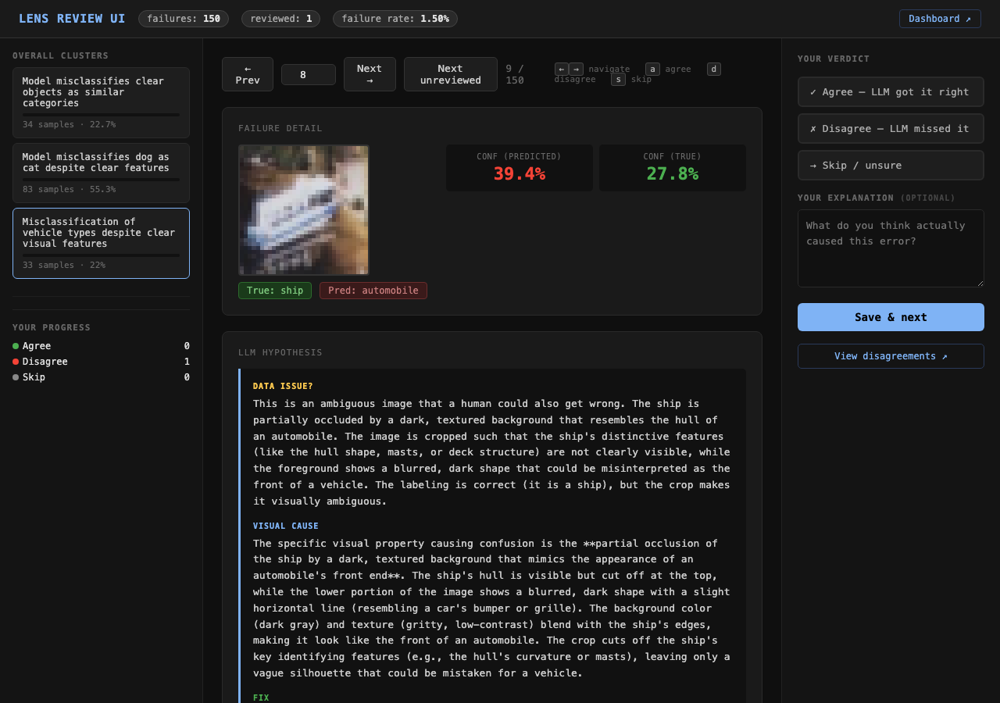
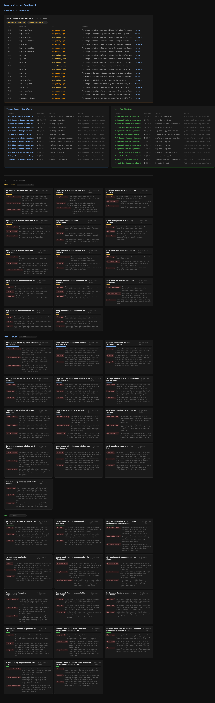

Where this came from
The habit that's stuck with me from working at Enterpret, Zomato, and Microsoft is doing proper error analysis before reaching for the usual levers — tuning hyperparameters, trying augmentations, scaling data. Not looking at aggregate metrics, but actually opening a spreadsheet with the raw examples and predictions, writing a hypothesis for each failure, and then stepping back to find patterns. It's slow and manual, but it consistently changes your understanding of what the problem actually is. Alexandru Burlacu makes a similar point: reducing a model to a single scalar forfeits too much information about where and why it's failing.
Lens is an attempt to automate that manual loop — using a vision-language model to generate structured per-failure hypotheses, and then clustering those hypotheses to surface patterns. The demo here uses an image classifier, but the approach is meant to be general across modalities and problem types. The scope of v1 is deliberately narrow: understand the failures on the validation set. Closing the loop back into training is the plan for later iterations.
Note: the LLM-generated hypotheses in this experiment have not all been manually verified by me. I am currently going through the results, validating them, and improving the prompts. This post will be updated as that work progresses.
What error analysis means here
When we say error analysis, we mean something specific. For each misclassified example, we want to answer three questions. These questions came from the first attempt at using an LLM to understand patterns of model mistakes — iterating on what to ask until the answers were actually useful for diagnosis. They are not fixed — someone coming from a different domain or with a different mental model of failures would likely frame them differently. The right questions depend on what you already know about your data and what kind of action you want to take.
1. Is there a data quality issue? By data quality we mean: is this image ambiguous, heavily cropped, or otherwise problematic in a way that's independent of the model? The main tag here is ambiguous_image — the image itself is hard, a human would also struggle. A second tag, model_error, covers cases where the image seems fine and the model just got it wrong. There is also an annotation_issue tag for suspected mislabels, but manual review suggests the VLM overcalls this — see the appendix.
The ambiguous_image tag is worth paying attention to beyond just flagging a data quality problem. Because these are images a human would also find hard, they carry a signal similar to what the visual cause dimension surfaces — they tell you something about the kinds of scenes and conditions the model is not equipped to handle. Looking at what makes those images ambiguous (unusual crops, texture overlap, low resolution) is itself a guide to what training augmentations might help.
2. What visual property caused the confusion? Not just "wrong class" — but what specific visual characteristic made the model pick the wrong one. Background texture bleed, partial occlusion, unusual crop, low contrast between object and background, etc.
3. What could help? Concretely — what augmentation, data collection strategy, or labeling change would address this specific failure?
These three dimensions are independent. The same failure can be an ambiguous image and have a clear visual cause and suggest a specific augmentation. Keeping them separate matters because they point at different kinds of action.
The pipeline
Here is how each step fits together and why each one is necessary:
Fine-tune a model and save every misclassification with top-3 predictions and confidence scores. Without a structured failure set, there is nothing to analyze. For this experiment we used ResNet-18 (ImageNet pretrained) on CIFAR-10, fine-tuned for 3 epochs with AdamW — FC head at lr=1e-3, backbone at lr=1e-4, no augmentation. This is the baseline; augmentation comes in iteration 2 after the analysis tells us what to target.
Each failure image goes to a local vision-language model (qwen3-vl:8b via Ollama) along with the true label and predicted label. The prompt asks the three questions above and expects a structured three-part response. This runs fully locally — no external API calls, no data leaving the machine.
The hypothesis formulation is the most important and most fragile step. The three questions here are generic and were arrived at by iterating on what actually produces useful diagnostic signal. The right questions depend heavily on the domain — someone doing error analysis on medical imaging failures will ask very different things than someone debugging a recommendation system. The current prompts are a starting point; tuning them for a specific domain is likely where the biggest quality gains are. You can see the exact prompts in the GitHub repo.
Rather than treating the hypothesis as a single blob of text, we embed and cluster each of the three dimensions separately using BAAI/bge-base-en-v1.5 sentence embeddings and KMeans. The data quality dimension gets compressed to a one-sentence verdict before embedding — if you embed the raw verbose text, the clusters end up grouping by which class pair was confused rather than what kind of data issue it is.
Cluster count is selected via silhouette score over k=15–30, with a minimum cluster size of 15 to filter noise. The clustering parameters (k range, minimum size) were decided empirically and are not formally tuned — this is an area that would benefit from more systematic evaluation.
A FastAPI server where a reviewer can page through sampled failures, see the image alongside its hypothesis and cluster tags, and record agree / disagree / skip verdicts. The human review step is what gives the pipeline ground truth — without it, there is no way to know how much to trust the automated output. The dashboard shows cluster summaries across all three dimensions with links back to individual failures.

Review UI — failure image with top-3 predictions, 3-part VLM hypothesis, and dimension cluster tags. Keyboard shortcuts for agree / disagree / skip.
What we found on CIFAR-10
Per-class accuracy is uneven. Cat sits at 61.9% F1, dog at 70.0% — noticeably behind the rest. Both show val loss rising after epoch 2, which initially looked like overfitting. We tried a few things: adding dropout on the FC head, a two-phase training schedule (freeze backbone first, then unfreeze), and a lower backbone LR. None of them helped — accuracy dropped in each case. It's possible the val loss rise is reflecting something about the inherent cat/dog boundary in CIFAR-10 rather than a training issue, but we haven't ruled everything out. The augmentation experiments planned for the next iteration should give a clearer picture.
| Class | Precision | Recall | F1 |
|---|---|---|---|
| airplane | 83.1% | 81.8% | 82.5% |
| automobile | 86.5% | 88.1% | 87.3% |
| bird | 75.9% | 71.1% | 73.4% |
| cat | 61.9% | 61.9% | 61.9% |
| deer | 73.8% | 77.2% | 75.5% |
| dog | 70.8% | 69.2% | 70.0% |
| frog | 81.5% | 87.1% | 84.2% |
| horse | 84.3% | 80.8% | 82.5% |
| ship | 86.8% | 89.7% | 88.2% |
| truck | 85.6% | 83.4% | 84.5% |
We sampled 150 validation failures (15 per class) for the VLM analysis. A few things to keep in mind before reading the numbers: this is purely an analysis of validation failures — we haven't looked at the training set at all. A single failure can be tagged with multiple issues; data quality and visual cause and a fix suggestion are not mutually exclusive. And the numbers downstream are only as reliable as each step that produced them — the VLM hypothesis quality, the accuracy of the one-sentence compression before embedding, and the quality of the sentence embeddings themselves are all unvalidated. Treat the counts as directional signals, not ground truth.
With that said: of the 150 failures, the VLM tagged 68 as ambiguous_image — the image itself looks hard, a human would also struggle. Unusual crops, low contrast, background texture bleeding into the object. The remaining 66 were tagged model_error, meaning the image seems reasonable and the error appears to be a model gap rather than a data problem. The VLM also produced 16 annotation_issue flags, but manual review suggests most of those are wrong — see the appendix.
The visual cause clusters gave a more specific picture of what the model is struggling with:
14 failures — dark foreground objects hiding discriminative features. The model struggled when a dark object in the foreground (a shadow, another animal, a fence) partially obscured the key part of the image that would distinguish one class from another. For example, a cat whose face is half-hidden behind a dark surface, leaving mostly fur texture visible — which overlaps heavily with dog fur.
9 failures — background texture closely matching the object texture. Cases where the background and the subject share similar color or texture patterns. A frog on a similarly-green leaf, or a horse against a brown earthy field — the model doesn't have a clean foreground/background separation to rely on.
8 failures — ship hull cropped to show only the lower portion. When a ship image is cropped tightly to show just the lower hull against water, the visual profile — a flat dark mass above a lighter surface — ends up looking similar to an airplane viewed from below. The model had no other context to disambiguate.
The fix clusters suggested concrete augmentations worth trying in the next training run:
| Fix cluster | Failures | What it means |
|---|---|---|
| Partial head occlusion augmentation | 10 | Randomly mask the head or upper region of animals during training, so the model learns to rely on body shape and texture rather than facial features alone |
| Tail section cropping augmentation | 7 | Apply crops that cut off the rear section of vehicles and animals, training the model to identify classes from partial views rather than assuming a complete object is visible |
| Background texture augmentation | 7 | Apply color jitter and texture augmentation to reduce the model's reliance on background cues — specifically targeting cases where the background and subject share similar texture or color |

Cluster dashboard — data issues spotlight at the top, followed by visual cause and fix cluster grids. Each row links back to the review UI for that failure.
Where the VLM got it right, almost right, and slightly wrong
Automobile → frog (9609). The car is bright green against a saturated green background. The hypothesis correctly identifies that the background color is what's driving the prediction — not anything about the car itself. The fix follows directly: color jitter, more green non-frog backgrounds in training. This is the clearest example of the pipeline producing something actionable.
Bird → airplane (4546, 7112). Both are birds in flight against open sky — you can see immediately why the model predicted airplane. The VLM correctly flags the bird/airplane boundary as the issue. But the specific reason it gives is wrong: 4546's hypothesis says the wings are "folded or tucked" when they are clearly spread, and 7112's says the head and tail are cropped out when both are visible. The top-level confusion is right; the causal detail is fabricated.
Ship → airplane (8892). That's an aircraft carrier. The hypothesis identifies the right structural cause — the flat deck and cropped masts creating a shape that reads like an airplane fuselage and tail. But it describes the background as "dark, textured, gradient of dark blue to black" when it's plainly a grey sky. The structural reasoning holds up; the background description doesn't match the image.
Three tiers visible across these examples: a hypothesis that's fully correct and actionable, hypotheses that identify the right failure class but fabricate the specific visual detail, and a hypothesis where the structural reasoning is sound but a secondary detail is wrong. The appendix covers the fourth tier — where the entire premise is invented.
Considerations if you want to use this in production
The pipeline as built is a proof of concept. Assuming LLM inference latency is not a blocking constraint, the things that actually determine the quality of the output are the accuracy of each individual step — and right now none of them are validated end-to-end.
Hypothesis quality depends on the prompt and the VLM. The prompts here are generic and were written without domain expertise in CIFAR-10 failure modes. For a real use case — say, a medical imaging classifier or a recommendation system — the prompts would need to be written by someone with direct experience doing error analysis in that domain. The VLM (qwen3-vl:8b) is also a relatively small model; larger or more capable VLMs would likely produce better hypotheses.
Compression quality (collapsing the verbose data quality section to a one-sentence verdict before embedding) is also unvalidated. It's a step we introduced to prevent embeddings from clustering by class confusion rather than data quality type, but how much signal is lost in the compression is unknown. It can also be removed entirely by editing the original hypothesis prompt to ask for a concise one-sentence data quality verdict directly — which would eliminate the compression step and its associated error surface.
Embedding and clustering quality determine whether the cluster labels are meaningful. We use BAAI/bge-base-en-v1.5 with KMeans and silhouette-selected k. The clusters look reasonable on inspection, but there's no automated evaluation of cluster purity or label accuracy.
The human review step is precisely there to address this — a reviewer marking hypotheses as agree/disagree/skip is the ground truth signal that lets you calibrate how much to trust the automated output. Right now those verdicts are stored but not yet fed back into the pipeline. Wiring that up — and using it to filter noisy clusters before they surface as recommendations — is the most important next step before using this for anything beyond exploration.
On cadence: at production scale you'd sample a fixed number of failures per class after each deployment, run the analysis, and re-cluster periodically rather than on every failure. The annotation_issue tag is the most directly actionable output — those val set examples are worth a human look to confirm the label, and if confirmed wrong, to check whether the same pattern exists in the training split.
The prompts and the code are on GitHub. The experiment results — training logs, cluster assignments, and human feedback for the baseline run — are checked in alongside the scripts.
Appendix: hallucinations and what needs work
The manual review so far has surfaced a real problem: the VLM hallucinates image content with some frequency. A few patterns I've noticed going through the results:
Invented visual details. For a ship misclassified as truck (image index 1685), the hypothesis describes a "uniform blue background" and builds its entire causal chain around that detail — the shape of the ship's bow against the blue, the resemblance to a truck's front bumper. Look at the image:
The background is dark grey rock/gravel, not blue. The VLM fabricated the key detail and then reasoned from it coherently. This is the worst-case failure mode — not a vague hypothesis, but a confident wrong one with a plausible-sounding causal chain built on top of a hallucinated premise.
Over-flagging annotation_issue. The VLM called automobile → dog (image index 4476) a labeling error — it described the image as "clearly a toy car" with "visible wheels, rectangular body, and steering wheel" and concluded the dog label was mislabeled:
The label is automobile, the model predicted dog at 72% — that's a genuine model failure. The VLM appears to be pattern-matching on the class pair (automobile predicted as dog sounds implausible, so it must be mislabeled) rather than actually reading the image. Of the 16 annotation_issue flags in this run, I suspect most will not hold up.
This is the central challenge with using a small VLM (qwen3-vl:8b) for this kind of task. The model produces fluent, specific-sounding hypotheses that are structured exactly as asked — but the image grounding is unreliable. It may describe textures, shapes, or colors that are not actually present, and because the output sounds specific and internally consistent, it's easy to miss that it's confabulated.
The fix is not obvious. A few directions worth exploring:
Prompt engineering. The current prompts ask for reasoning in one pass. Asking the model to first describe what it literally sees in the image — before reasoning about why the model was confused — might reduce hallucinated details by anchoring the hypothesis to the visual description step. Asking the model to express uncertainty explicitly ("I cannot tell if the background is...") might also help. These are hypotheses about prompting, not validated conclusions.
Larger VLM. A larger model (e.g., qwen3-vl:72b, or a cloud-hosted multimodal model) would likely hallucinate less on the image description step. The tradeoff is inference cost and latency — the 8b model runs locally in a few seconds per image; a 72b model is 10x slower and either requires significant hardware or an external API call.
Chain-of-thought grounding. Asking the model to describe specific regions of the image (top-left quadrant, foreground vs. background) before reasoning about the failure might produce more grounded hypotheses. This would also make it easier for a human reviewer to spot fabricated details, since the description step is separately verifiable.
Until the hypothesis quality is validated systematically, the cluster-level patterns should be treated as hypotheses to investigate rather than conclusions to act on. The human review step exists precisely to catch this — but it needs more coverage than three examples. I am continuing to work through the failures.